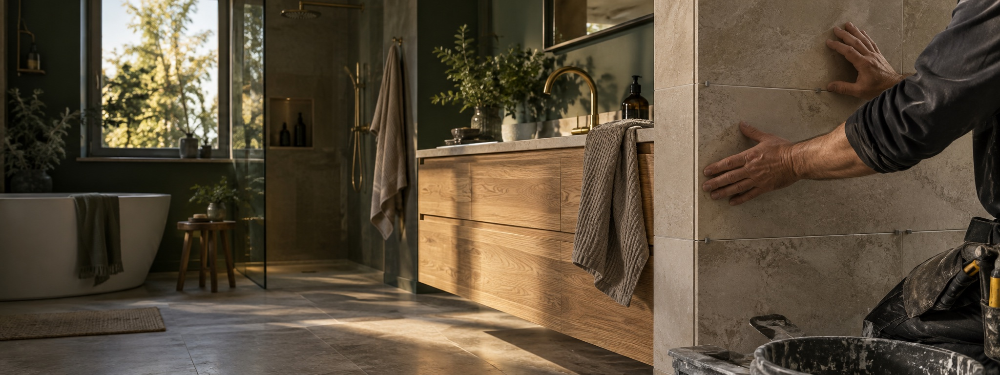

BYGG · KAKEL · EL · VVS
Ett hem att
trivas i.
Från den första idén till den sista detaljen. Vi samlar bygg, renovering och rätt yrkeskunskap under samma tak.
En kontakt genom hela projektet.
Inget uppdrag lämnas halvgjort.
Vi bygger om.
Vi bygger vidare.
När flera delar ska fungera tillsammans gör en tydlig helhet skillnad.
Wallgrens Byggservice hjälper dig att förvandla idéer till väl utförda rum och hållbara lösningar. Med nära samarbete och goda yrkeskontakter kan du få hjälp med hela projektet, från planering till färdigt resultat.
Prata med oss om ditt projektRätt hantverk.
Rätt från början.
Små förbättringar eller en större förvandling. Vi hjälper dig att hitta en lösning som passar både huset och vardagen.
 01 / 06
01 / 06Badrum
Från första planeringen till färdigt våtrum. Kakel, tätskikt och detaljer samordnade med omsorg.
 02 / 06
02 / 06Kök
En köksrenovering som förenar smart funktion med en stil som känns som din.
 03 / 06
03 / 06Tak
Vi hjälper dig att se över taket och hitta en hållbar lösning för ditt hus.
 04 / 06
04 / 06El
Elinstallationer för renovering och nybyggnation, anpassade efter behov och gällande krav.
 05 / 06
05 / 06VVS
Installationer och uppdateringar i badrum, kök och övriga delar av bostaden.
 06 / 06
06 / 06Renovering
& tillbyggnad
Ombyggnad, tillbyggnad, fasad och golv. Vi tar hand om helheten och samordningen.
 GENOMTÄNKT IN I MINSTA DETALJ
GENOMTÄNKT IN I MINSTA DETALJDu ska inte
behöva hålla
ihop allt.
Vi arbetar nära dig och hjälper till att samordna rätt kompetens. Det gör det lättare att se helheten, hålla riktningen och landa i ett resultat du kan känna dig nöjd med.
- 01Vi lyssnarVi går igenom dina önskemål och förutsättningar.
- 02Vi planerarDu får en tydlig bild av upplägg och nästa steg.
- 03Vi genomförArbetet samordnas med kvalitet och omtanke.
Ordning på
det viktiga.
Vi värdesätter kvalitet, säkerhet och arbeten som följer branschens krav. Wallgrens visar certifieringar och behörigheter från etablerade branschorganisationer.
WBYGGD PÅFÖRTROENDE
Lokalt engagemang.
Hantverk med ansvar.
Wallgrens Byggservice i Göteborg AB hjälper privatpersoner med bygg och renovering. Vi tror på nära dialog, noggrant utfört arbete och ett ansvar som följer projektet från start till mål.
Med bas i Angered och ett nätverk av yrkeskunniga samarbetspartners erbjuder vi hjälp med helheten, oavsett om det gäller ett rum eller ett större projekt.
Innan vi
sätter igång.
Osäker på var du ska börja? Ta kontakt, så guidar vi dig vidare.
Ställ din frågaVilka typer av projekt kan ni hjälpa till med?+
Vi arbetar med badrum, kök, tak, el, VVS samt generella renoveringar och tillbyggnader. Hör av dig om du vill diskutera en specifik idé.
Kan ni hjälpa till med hela renoveringen?+
Ja, Wallgrens erbjuder helhetslösningar och arbetar med samarbetspartners så att du kan få hjälp med flera delar av projektet.
Arbetar ni i Göteborg med omnejd?+
Wallgrens Byggservice har sin bas i Angered och erbjuder bygg- och renoveringstjänster i Göteborgsområdet. Kontakta oss för att stämma av ditt projekt.
Hur får jag en offert?+
Ring eller mejla med några rader om arbetet, adressen och när du vill komma igång. Den första offertförfrågan är kostnadsfri.
Har ni behörighet för våtrum?+
Wallgrens Byggservice anger certifieringar inom bland annat BKR, PER och behörigt våtrum. Berätta gärna om projektet så kan vi gå igenom vad som gäller för just ditt arbete.
KOSTNADSFRI OFFERT
Vad vill du
förändra?
Ett nytt badrum, ett kök som fungerar bättre eller en idé som ännu bara finns på papper. Vi börjar med att lyssna.
Eriksbo Backe 5
424 34 Angered